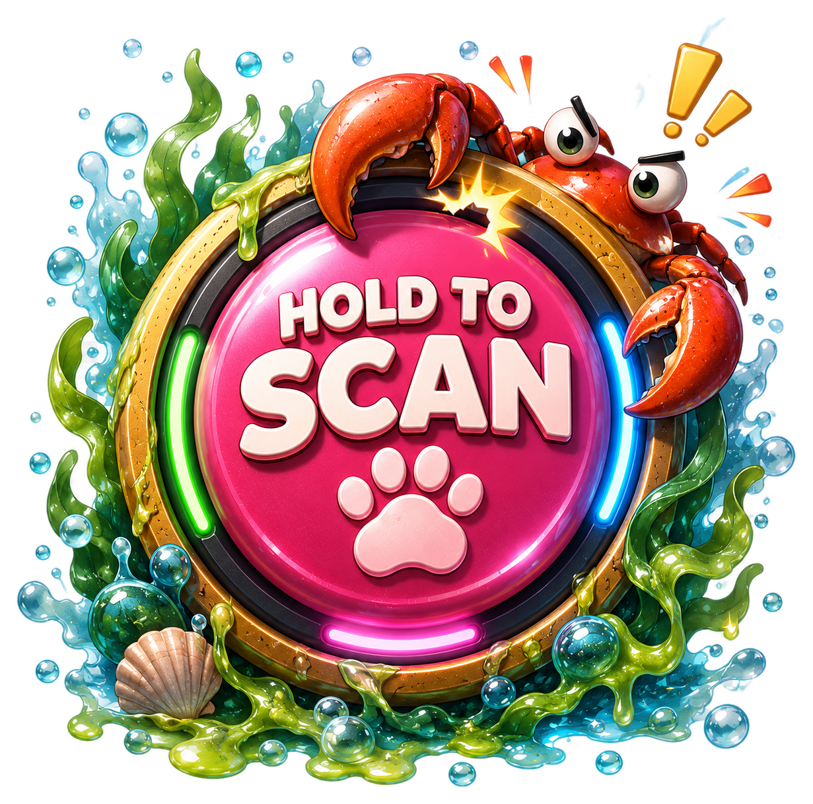

SIGNAL ACQUIRED

PRESENTS
A SALT-WORN CORNER OF THE COAST


Plats: Old Pier
🍟 Professionell snackstjuv.





Pick an area. Your current signal points to Old Pier — Steve was seen circling there.
Transmission damaged.
Match the fragments to repair it before the signal fades.